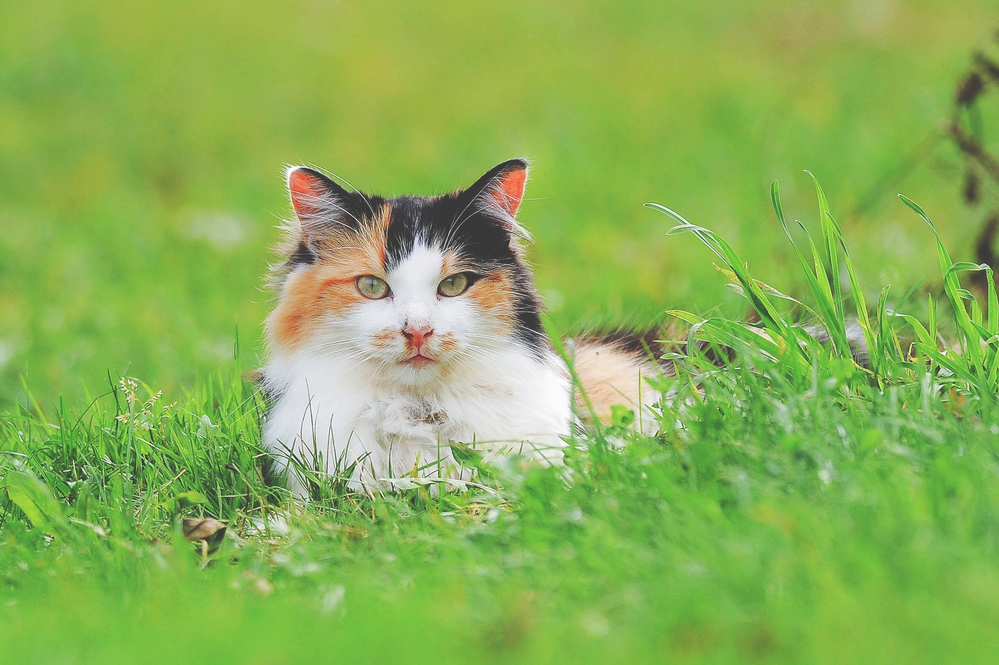

- 공지사항
- 길냥이 후원
- 자료실

안녕하세요. 한국고양이보호협회입니다.
길고양이들의 반복된 발정과 임신, 그리고 출산. 척박한 길고양이들의 삶이 조금이나마 건강하고 평화로운 묘생을 살길 바라는 마음으로
한국고양이보호협회는 1년 365일 TNR을 지원해드리고 있습니다. 또한 매해 꽃냥이캠페인, 단풍냥이캠페인을 통해 돌보시는 길아이들의
TNR에 대한 비용을 전액 지원해드려 아이들을 돌봐주시는 캣맘/캣대디 분들의 재정적인 부담을 덜어드리고자 캠페인을 실시하고 있습니다.
고보협 TNR은 본인이 돌보시고 신청하시는 아이들에 한해 TNR 지원을 도와드리고 있으며 대리 신청을 금하고 있습니다. 또한 제자리방사를
원칙으로 하기에 입양을 목적으로 하는 TNR은 지원대상이 아닙니다.이에 정말 안타까운 길아이들의 문의를 주시는 경우가 많습니다. 시장/식당/가게
등에서 쥐잡이용 고양이로 묶어 키우는 아이들, 애니멀호더로추정되는 분들에게 중성화가 되지 않은 채 키워지고 번식묘로 살아가는 아이들, 길에서
살아가기 어려운 유기묘/품종묘 등 본인이 직접 돌보시는아이는 아니나, 꼭 TNR이 필요한 아이들, 중성화가 필요한 아이들에 대한 문의를 해주시는
회원님들이 계십니다. 협회는 앞서 말씀드린 아이들이야말로 꼭 TNR이 필요하고 중성화가 필요한 아이들이라고 생각했습니다.
하여 리본냥이캠페인을 1년내내 상시진행하고자 합니다. 줄에 꽉 묶여 옭아매여져 살아가는 아이들이 안타까운 삶의 굴레에서 벗어나 다시 태어난
제2의 묘생을 살 수 있길 바라는 마음에서 시작한 리본(reborn)냥이 캠페인을 실시합니다. 후원자분들의 소중한 후원금으로 진행되는 캠페인이기에
캠페인 혜택을 받으시고 바로 후원을 끊으시거나 지원을 받으시는 동안 무리한 요구를 하시는 분들이 계시기에, 해당캠페인은 신청하시는 모든 분들이
지원이 되시는 것은 아닙니다.
아이들이 제 2의 꽃길묘생을 살 수 있도록 리본냥이 캠페인을 홍보해주시고 신청해주세요~